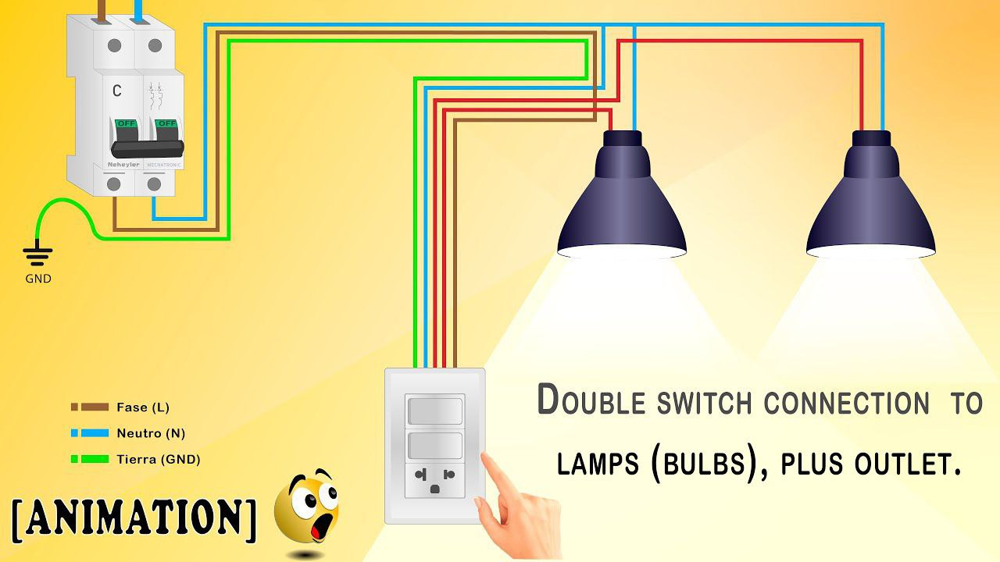
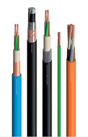
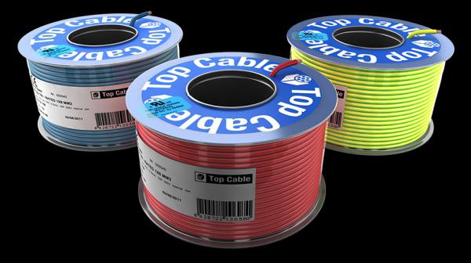
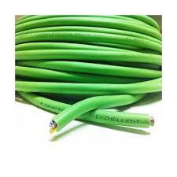
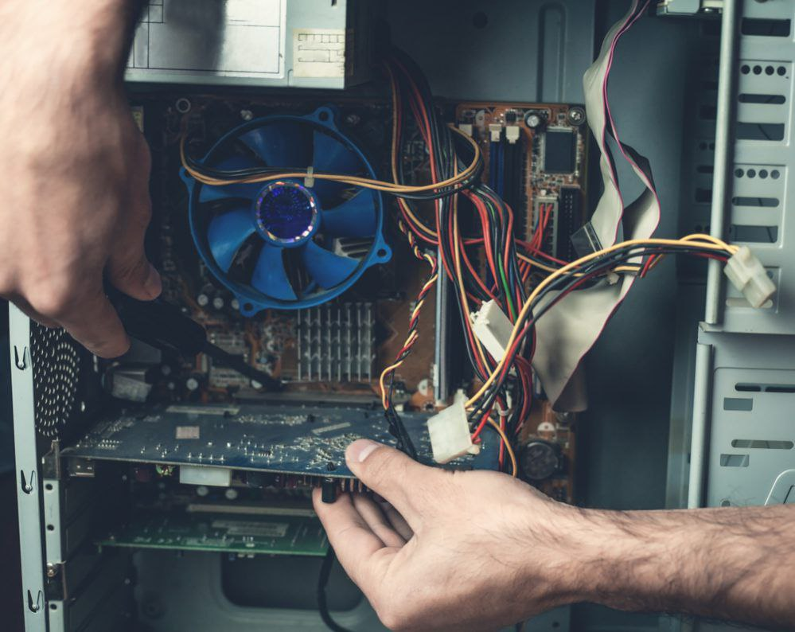

CIRCUITOS ELECTRICOS
ES EL CONJUNTO DE ELEMENTOS ELECTRICOS CONECTADOS ENTRE SI QUE PERMITEN GENERAR, TRANSPORTAR
Y UTILIZAR LA ENERGIA ELECTRICA CON LA FINALIDAD DE TRANSFORMARLA EN OTRO TIPO DE ENERGIA COMO,
POR EJEMPLO, ENERGIA CALORIFICA(ESTUFA), ENERGIA LUMINICA(BOMBILLA) O ENERGIA MECANICA(MOTOR)
TENEMOS 3 TIPOS DE CIRCUITOS ELECTRICOS
CIRCUITO EN SERIE
EL CIRCUITO EN SERIE SE BASA EN LA CIRCULACION DE LA ELECTRICIDAD POR UN MISMO CAMINO
EN SERIE, LA CORRIENTE(INTENSIDAD) NO DISMINUYE AL PASAR POR LOS DISPOSITIVOS. ESTE SE CARACTERIZA POR
TENER SOLO UNA UNICA RUTA PARA EL FLUJO DE CORRIENTE. SOLO HAY UNA FORMA EN QUE LA CORRIENTE PUEDE
FLUIR, NO HAY RUTAS ALTERNATIVAS Y ESO HACE QUE ESTE SEA CIRCUITO EN SERIE. SU DESVENTAJA ES QUE UNA
INTERRUPCION O FALLO EN UN PUNTO DEL CIRCUITO AFECTARIA AL FLUJO RESTANTE DE LA CORRIENTE

CIRCUITO EN PARALELO
ESTA CLASE DE CIRCUITO O COMPONE UNA DIVISION DEL CAMINO EN EL FLUJO, YA QUE LA
CORRIENTE(INTENSIDAD)SE DISTRIBUYE POR LOS DIFERENTES CAMINOS HACIA LAS RESISTENCIAS, REGRESANDO A UN
UNICO CAMINO.UNA GRAN VENTAJA DE ESTE CIRCUITO ES LA INDEPENDENCIA DE CADA ESTACION, CUYA POSIBLE
FALLA NO ALTERARIA EN ABSOLUTO LA DIFERENCIA DE POTENCIAL QUE HAY EN LOS EXTREMOS DEL CIRCUITO

CIRCUITO MIXTO
ESTA CLASE REUNE LOS ANTERIORES CIRCUITOS TANTO PARALELO COMO EN SERIE. NO TODAS
LAS RESISTENCIAS VAN A RECIBIR LA MISMA CORRIENTE. LA QUE ESTA EN SERIE SERA LA QUE MAS RECIBA, YA QUE
POR ELLA CIRCULA TODA LA INTENSIDAD

LOS TIPOS DE INTERRUPTORES ELECTRICOS
INTERRUPTOR DOBLE O MULTIPLE
ESTE TIPO DE INTERRRUPTOR ES MUY COMUN EN ESPACIOS GRANDES EN LOS QUE SE NECESITA ACCIONAR
LA LUZ DE DIFERENTES ZONAS DESDE UN MISMO PUNTO POR EJEMPLO ES UN SALOON TE PERMITE ENCENDER LA LUZ
DE LA ZONA DEL COMEDOR POR UN LADO Y LA ZONA DE LA SALA POR OTRO Y LA ZONA DE LA SALA DE ESTAR POR
OTRO, SIEMPRE DESDE UN MISMO PUNTO

INTERRUPTOR DE PIE
ESTE TIPO DE INTERRUPTOR ESTA DESTINADOS, COMO SU PROPIO NOMBRE LO INDICA, A SER ACCIONADOS
CON EL PIE. SE SUELEN UTILIZAR ESTE TIPO DE INTERRUPTORES ELECTRICOS ES INTENTAR OCULTARLOS EN ALGUN
LUGAR FACIL ACCESO POR EJEMPLO BAJO EL SOFA

INTERRUPTORES DE MANO
SON SIMILARES A LOS QUE HEMOS PRESENTADO EN EL APARTADO ANTERIOR,
LA DIFERENCIA ES QUE ESTOS QUEDAN AL ALCANCE DE LA MANO. LOS INTERRUPTORES DE MANO SE SUELEN UTILIZAR
PARA ENCENDER Y APAGAR DE ESTUDIOS, DE MESILLA DE NOCHE

TIPOS DE CABLES
CABLES DE BAJA TENSION

CABLES PARA PANELES ELECTRICOS

CABLES LIBRES DE HALOGENOS

CABLES RESISTENTES AL INCENDIO

CAJA TERMICA
UNA CAJA TERMICA ESTA PREPARADA PARA LA COLOCACION DE TERMICAS Y DISYUNTORES POR ESO, EN
PRIMER LUGAR CABE MENCIONAR QUE LA LLAVE TERMICA ES UN DISPOSITIVO CAPAZ DE INTERRUMPIR LA CORRIENTE
ELECTRICA DE UN CIRCUITO CUANDO ESTA SOBREPASA CIERTOS VALORES MAXIMOS. DE ESTA MANERA SE EVITARAN
SOBRECARGAS O CORTOCIRCUITO. SU FUNCIONAMIENTO SE BASEN DOS DE LOS EFECTOS PRODUCIDOS POR LA CIRCULACION
DE CORRIENTE EN UN CIRCUITO. EL MAGNETICO Y EL TERMICO.

BREAKER
CUAL ES EL FUNCIONAMIENTO DE UN BREAKER
UN BREAKER ES UN TERMINO EN INGLES SIGNIFICA INTERRUPTOR, EL CUAL OPERA AUTOMATICAMENTE
CERRANDO O INTERRUMPIENDO EL FLUJO DE CORRIENTE DEL CIRCUITO PARA PROTEGER LA INSTALACION Y PERSONAS
DE DAÑOS QUE PUEDEN GENERAR LOS CORTOCIRCUITOS O SOBRECARGAS
DIAGNOSTICO
HERRAMIENTA PARA DETECTAR COMO IDENTIFICAR, DIAGNOSTICAR Y REPARAR PROBLEMAS EN LAS COMPUTADORAS IDENTIFICAR
UN PROBLEMA CON UNA PC PUEDE SER DIFICIL
DAÑOS BASICOS EN EQUIPOS INFORMATICOS
LOS MOTIVOS PUEDEN SER VARIOS.NO SE HA INSTALADO CORRECTAMENTE, LA VELOCIDAD DE LA MEMORIA ES INCOMPATIBLE CON LA PLACA BASE.
PUEDE SUCEDER QUE APAREZCAN MENSAJES EN LA PANTALLA .
ESTE TIPO DE ERRORES SON GRAVES Y TIENEN COMO UNICA SOLUCION LA SUSTITUCION DE LA PLACA.

RELACIONADOS(FUENTES, REGULADORES, UPS, ETC)
FUENTES
SON FUENTES DE INFORMACION LOS TESTIMONIOS ,LA RESEÑA,
LOS ENSAYOS, LAS PAGINAS WEB,LAS REFLEXIONES,LOS LISTADOS BIBLIOGRAFICOS,
LOS INDICES,LAS GRABACIONES PROFESIONALES,ACCIDENTALES O CLANDESTINAS,
LAS FOTOGRAFIAS,LAS FILMACIONES E INCLUSO LAS ILUSTRACIONES.
REGULADORES DE VOLTAJE
UN REGULADOR DE TENSION O REGULADOR DE VOLTAJE ES UN DISPOSITIVO ELECTRONICO DISEÑADO PARA MANTENER UN NIVEL DE TENSION
CONSTANTE .LOS REGULAORES ELECTRONICOS DE TENSION SE ENCUENTRAN EN DISPOSITIVOS COMO LA FUENTE DE ALIMENTACION EN LAS COMPUTADORAS,
DONDE ESTABILIZAN LAS TENSIONES DE CORRIENTE CONTINUA USANDO POR EL PROCESADOR Y OTROS ELEMENTOS
UPS
SISTEMA DE ALIMENTACION ININTERRUMPIDA (SAI), EN INGLES UNINTERRUPTIBLE
POWER SUPPLY (UPS), ES UN DISPOSITIVO QUE GRASIAS A SUS BATERIAS U OTROS ELEMENTOS ALMASENADORES DE ENERGIA, PUEDE PROPORCIONAR ENERGIA ELECTRICA POR UN TIEMPO LIMITADO Y DURANTE UN APAGON ELECTRICO A TODOS LOS DISPOSITIVOS QUE TENGAN CONECTADOS.OTRAS DE LAS FUNCIONES QUE SE PUEDEN ADICIONAR A ESTOS EQUIPOS ES LA DE MEJORAR LA CALIDAD DE LA ENERGIA ELECTRICA QUE LLEGA A LAS CARGAS , FILTRANDO SUVIDAS Y BAJADAS DE
TENCION Y ELEMINANDO ARMONICOS DE LA RED EN EL CASO DE USAR CORRIENTE ALTERNA